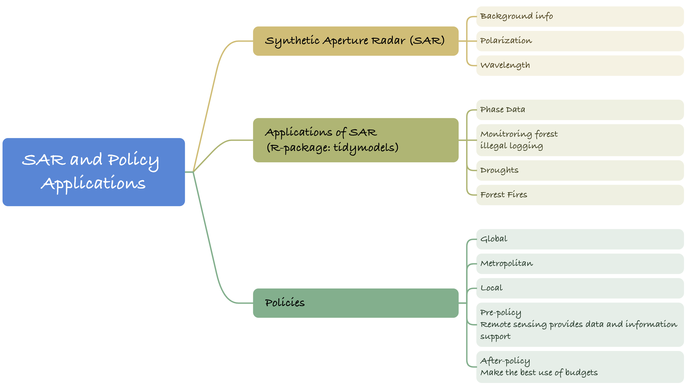
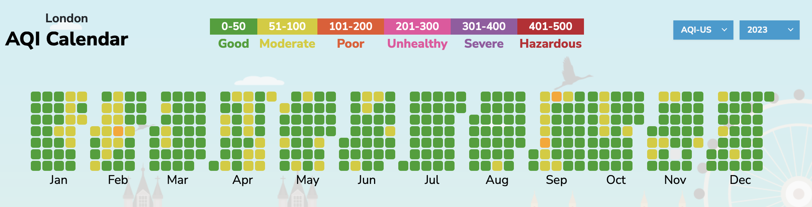
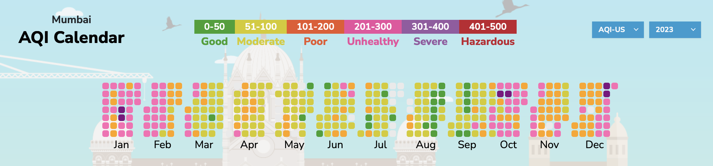
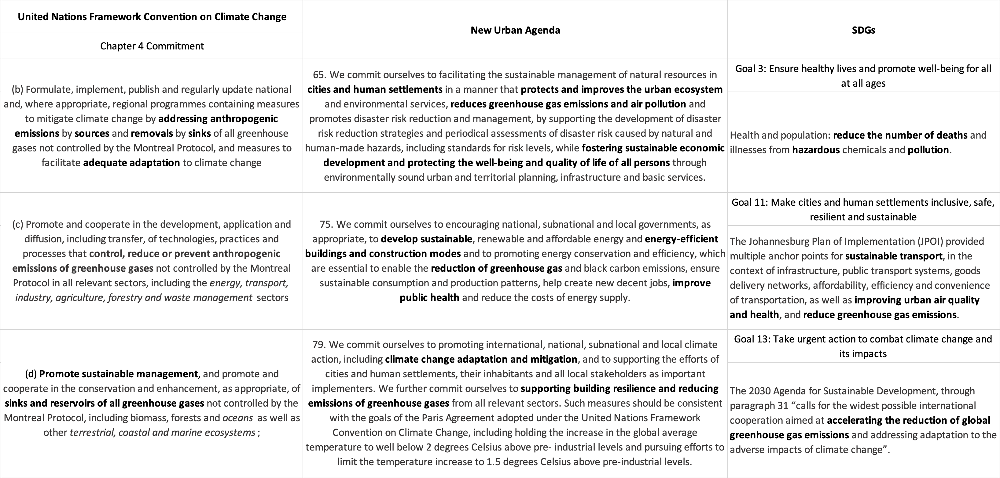
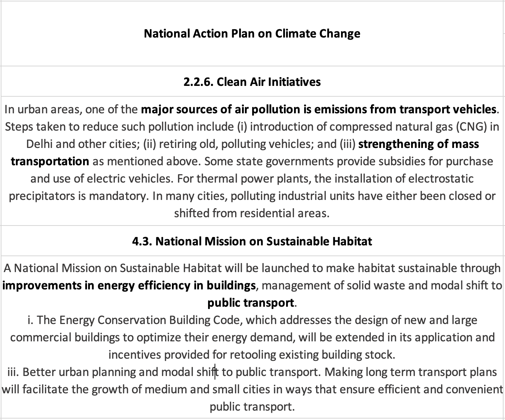

Week 04 SAR applications & Policies
1. Summary

1.1. Synthetic Aperture Radar (SAR)
1.1.1. Background info
Synthetic Aperture Radar, or SAR for short, is a type of active sensor. Unlike passive remote sensing, active sensors are not affected by weather, cloud cover, or light. The time delay and phase difference of the reflected signals are recorded by actively transmitting microwave pulses to generate surface images.
In addition to being unaffected by weather and light, SAR is also highly penetrating and can penetrate vegetation (mentioned in the Wavelength section).
1.1.2. Polarization
The concept of polarization was mentioned in Week1. However, in Week4, different types of polarization are introduced, such as horizontal polarization (HH), vertical polarization (VV), and cross-polarization (HV).
Source: Dabboor and Brisco, 2018
Different types of features have different reflection and scattering characteristics of radar signals. For example, bare rock or ground is more sensitive to vertical polarization and scatters in the same direction as the vertical polarization, making it easier to capture this type of signal; leaves and branches in vegetation respond differently to radar waves, resulting in signals that vary in different polarization modes, and are therefore more sensitive to cross-polarization; in vertical structures, such as trees and buildings, the radar wave is first in contact with the ground, and then reflected again to the receiver, and horizontal polarization is the most sensitive for such cases.
1.1.3. Wavelength
Different wavelengths have different usage scenarios, for example, radar systems with shorter wavelengths have higher resolution and are able to display features more clearly. However, the penetration ability for atmosphere and vegetation is poor (Ottinger and Kuenzer, 2020), and it is not easy to obtain information on the surface obscured by vegetation.
Source: Ottinger and Kuenzer, 2020
Radar systems of different wavelengths respond differently to polarised scattering, e.g. more scattering is produced by features on rough surfaces (The SAR Handbook).
Source:Ottinger and Kuenzer, 2020
1.2. Applications of SAR
- Phase and Amplitude Data: The SAR actively transmitting wave records information by scattering from the target, which is recorded in two main ways: phase and amplitude. Phase is used to determine the distance from the sensor to the target, while amplitude indicates the amount of transmitted signal returned to the sensor. Amplitude and phase measurements provide information about the roughness, geometry, and humidity of the target.
SAR has many applications, such as monitoring forests and illegal logging (Hansen et al., 2010), drought monitoring, forest fire monitoring (Morante-Carballo et al., 2022), and * temperature and heat island effect research in P48-P50 (Li et al., 2022) (which also will be mentioned in Week5).
- Interferometric Synthetic Aperture Radar (InSAR): SAR-based extensions use the phase difference between two or more radar images to derive elevation information about the surface. It is mainly used in topographic surveys and surface deformation monitoring (e.g., earthquakes) Data processing for InSAR involves interferometric image generation, creation of elevation models, etc.
1.3. Polocies
| Policies | |
|---|---|
| Global | New Urban Agenda, Sustainable Development Goals |
| Metropolitan | Policy SI 12 Flood risk management, OneNYC 2025 |
| Local | Cape Town Municipal Spatial Development Framework |
Policies at the global level consist mainly of the New Urban Agenda and the SDGs, both of which I believe emphasise the core concept of sustainability. The New Urban Agenda stresses how to build an inclusive, safe, resilient and sustainable city, as do the Sustainable Development Goals. In other words, ensuring that urban development meets human needs without negatively impacting the environment and society. But the literature doesn’t seem to be able to integrate policies with human needs very well, and the question of Page 53 is well worth thinking about.
Policies, whether metropolitan or local, are considered to be detailed to a particular city. Global policies are used more to monitor and understand the changing conditions of the earth as a whole, while local policies are more local and specific, more directly affecting the lives of citizens and the sustainable development of cities. Policies in these cities are mainly concerned with disaster monitoring, land use, environmental monitoring, and post-disaster reconstruction, and remote sensing can provide data and information in this part. For example, remote sensing data combined with models and algorithms can be used to predict and simulate environmental phenomena, thus helping policy makers to visualise the impact of different policies and providing them with decision support.
2. Application
2.1. Introduction
I have chosen Mumbai as the city for my research, which is located in the western Indian state of Maharashtra. As one of the largest cities in India, Mumbai is the economic, financial and commercial centre of India and one of the busiest ports in the country. Since the Air Quality Index (AQI) of Mumbai has been maintained at unhealthy levels for a long time, while there are many news reports about Mumbai’s poor air quality and the failure of construction sites to be regulated, I would like to study India whether the Mumbai Municipal Corporation has enacted some policies to control air pollution. In addition, can remote sensing data help government workers to formulate better policies to protect the environment in which people live.
2.2. Background
According to the historical data of Air Quality Index of AQI.IN, Mumbai is rarely able to achieve Good air quality in the year 2023, while London is almost the exact opposite.
 Source:AQI.IN  Source:AQI.IN
According to The Time of India reports in 2022 and 2023, air pollution continues to be a serious problem. And according to reports, PM2.5 in the homes of people living near construction sites exceeds 300µg/m3, which is even more than three times the official figure (69.5µg/m3), compared to the UN’s healthy range of <10µg/m3.According to CARB’s information, PM2.5 can have adverse health effects, including premature death, bronchitis, asthma attacks, respiratory symptoms, and debilitating lung function development in children are associated.
2.3. Policies
2.3.1. Global
To allow air pollution to become so severe is contrary to commitments (b), (c), and (d) of Article 4 of The United Nations Framework Convention on Climate Change (UNFCCC); 65, 75, and 79 of The New Urban Agenda; “Goal 3, 11, 13 of The Sustainable Development Goals.
 Source:UNFCCC, The New Urban Agenda, SDGs
Overall, Mumbai’s current unsustainable building patterns in the city, greenhouse gas emissions that far exceed standards, and particulate emissions that are harmful to people’s health are all contrary to global policies. Malathy Iyer’s (2023) research suggests that Mumbai’s air pollution stems not only from unsustainable construction modes, but also from construction-induced reductions in road surfaces, combined with Mumbai’s over 120,000 car ownership. Vehicles need to spend more time on the road, which leads to an increase in NOx and pollutant emissions. In addition, NOx generates oxygen radicals in a photochemical reaction, which combine with oxygen molecules to generate abrasive and corrosive ozone, further harming people’s health.
2.3.2. National and Local

 Source: Mumbai Climate Action Plan 2022
Source: Mumbai Climate Action Plan 2022
 Source: Government of India
Policies at the Metropolitan and Local levels are more focused on practical implementation due to the contribution of total suspended particulate matter (PM) emissions from construction activities and pollution from traffic exhaust. The emphasis is on safeguarding the health of citizens through sustainable transport and air quality management. Mumbai Climate Action Plan 2022 states that reliance on ground-based monitoring stations limits the scope and breadth of analyses, and thus fails to identify past patterns and future trends. Remotely sensed data can go some way towards filling critical data gaps.
2.4. Appling Remote Sense Data and Methods to Achieve Policy Goals
According to Lim et al. (2009), their proposed algorithm is able to calculate PM10 concentrations using remotely sensed data and allows for better visualisation of mapping PM10 concentrations. The source of the data is Landsat TM 5 and according to their proposed algorithm it was found that there is a linear relationship between Atmosphere Reflectance and the change in PM10:
R_{}() = [a P{Pa}(, ) + _r G P_r(, )]
In addition, Scheibenreif, Mommert, and Borth (2021) used deep learning models to predict ambient air pollution. Their use of optical satellite imagery and remote sensing data (Sentinel-2 Level-2A data) avoids the local and temporal limitations of traditional data. And they are able to zoom in on air pollution estimates at high spatial resolution to arbitrary locations, identify major sources of air pollution and greenhouse gases, and monitor them over time.
2.5. Reflection of Applications
Both studies contribute to the fulfilment of policy goals or the solution of problems, and the application of remotely sensed data allows researchers to have a more dynamic and complete view of climate and air quality. In the former, mathematical methods and regression algorithms were used to demonstrate that PM10 concentrations can be calculated from atmospheric reflectance, which, however, is related to top-of-atmosphere reflectance and surface reflectance. Although the theoretical additive and subtractive relationships are stated, the errors in the tests are not taken into account. The latter is the prediction of pollutant concentration by machine learning algorithms, unfortunately due to the limitation of the dataset they were only able to obtain an R2 of 0.25. Although the pre-training provided by the migration learning improved the model’s performance to a certain extent (R2=0.45), the MAE was still 6.62±0.17 μg/m3, which means that the model still did not have a very good performance. However, as the field of deep learning develops, more powerful models can hopefully provide more accurate pollution predictions to help managers create sustainable cities and improve the health of citizens.
3. Reflection
This week’s class is relatively theoretical, and after introduction of first week, the concepts and workings related to SAR are well understood. But InSAR is still a challenging concept and particular application of SAR. But maybe not every application needs to be very clear about every detail, mastering the overall process as well as the overall functionality is enough for me to use and search for related detailed applications. The Case provided by P48-P50 is also very helpful, combining the classic framework of the thesis, and showing how to use remote sensing as a data source and technology in solving practical problems in the section of Data and Methodology.In fact, remote sensing data is not a very complicated and difficult concept, and this case largely reduced my unfamiliarity with the concept of remote sensing.
Regarding the part about policies and remote sensing, I had a question when I was listening to the lecture: what is the relationship between these policies and remote sensing? After doing some searching, I found that this relationship can be in two parts. The first part is “pre-policy”, where remote sensing data can be used in conjunction with models and algorithms to visualise different outcomes for planners before a policy is issued, helping them to decide how the policy should be made. The other part is “post-policy”, where policies have been issued in response to specific phenomena (e.g., heat, floods, droughts, etc.) due to the presence of those phenomena. Remote sensing can be used as a technology to help governments and organisations to better understand and respond to environmental challenges. Supporting them at the data level to make the best use of resources.
One of the great things about this lecture is that it made me realise that not every detail is so important, and that it is much clearer to have a general framework and process in place first. So many of the policies in the second half of the class were still a little vague for me, despite being broken down into Global, Metropolitan, and Local. However, when I really studied them in detail, and read the policies in detail, I realised that I could actually understand them in a different way: global policies provide the general framework, and urban policies are implemented in different aspects of urban management with remote sensing data in order to fulfil the vision of the global policies.